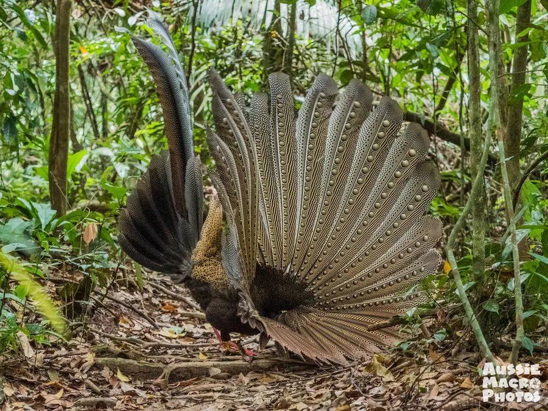

鸟类 · 动物界
大眼斑雉 Argusianus argus

东南亚雨林中的大型雉类，雄鸟尾羽极长，翅上飞羽生有巨大的眼状斑，求偶时展开双翅围成扇面，在林间空地起舞。
- 分类
- 门脊索动物门纲鸟纲目鸡形目科雉科属大眼斑雉属
- 栖息环境
- 马来半岛、苏门答腊与婆罗洲的低地原始雨林和次生林
- 地理分布
- 东南亚的马来半岛、苏门答腊岛和婆罗洲
- 保护级别
- IUCN 易危（VU）
物种志
大眼斑雉是体型最大的雉类之一，雄鸟连尾全长可达 160–200 cm，体重 2–2.7 kg；雌鸟仅约 72–76 cm，羽色暗淡。雄鸟头颈裸露，皮肤呈蓝色，身体红褐色并布满细密斑点，最外侧飞羽极长，羽端生有巨大的眼状斑，展开时如同一排孔雀眼。
它们分布于马来半岛、苏门答腊和婆罗洲的低地雨林，活动于海拔 900 m 以下的原始林与次生林。雄鸟会清理出一块林间空地作为求偶场，清晨先发出响亮的叫声，再展开双翅、竖起尾羽绕圈展示，以眼斑吸引雌鸟。雌鸟独自筑巢产卵，每窝通常 2 枚，孵化约 25 天。由于低地雨林被大量开垦为油棕园，其栖息地不断缩小，被列为易危物种。
形态与习性
- 食性果实、种子、昆虫及小型无脊椎动物
- 体长雄鸟连尾 160–200 cm，雌鸟 72–76 cm
- 体重雄鸟 2–2.7 kg
- 繁殖每窝约 2 枚，孵化约 25 天
- 求偶清理林间空地，展开双翅成扇面展示眼斑
- 海拔多在 900 m 以下的低地雨林
趣味知识
- 雄鸟最外侧的飞羽可长达 1 m 以上，是雉类中最长的羽毛之一。
- 求偶时它把双翅展开成巨大的扇面，一排眼斑同时朝向雌鸟。
- 大眼斑雉的叫声先是一连串升高的音节，随后才是展翅表演。